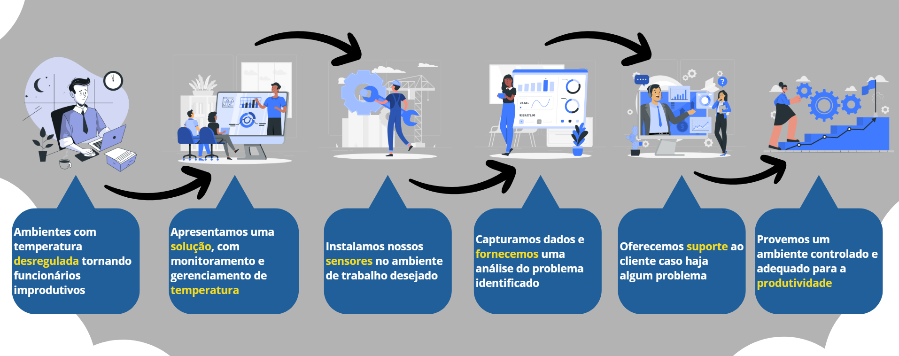

Produto
O Sistema de Monitoramento de Temperatura e Umidade fornecido pela EcoYield é a solução definitiva para garantir um ambiente de trabalho confortável e produtivo em seu escritório. Com nossa tecnologia, você terá controle total sobre a temperatura e umidade, permitindo uma gestão eficaz do clima de seus escritórios.
Nossos sensores fornecem dados precisos e em tempo real, permitindo o monitoramento do ambiente de forma que, em caso de irregularidade, nossos clientes sejam notificados para assim agirem contra o problema. Nossa dashboard oferece dados relevantes para que haja um melhor cuidado do ambiente.
Nossos sensores fornecem dados precisos e em tempo real, permitindo o monitoramento do ambiente de forma que, em caso de irregularidade, nossos clientes sejam notificados para assim agirem contra o problema. Nossa dashboard oferece dados relevantes para que haja um melhor cuidado do ambiente.
Transforme seu ambiente de trabalho, obtenha nosso produto e observe como podemos ajudar a melhorar o conforto, a saúde e a produtividade dos seus funcionários hoje mesmo.
Razões para adquirir
Bem-estar
O bem-estar geral é prioridade para que uma empresa conquiste o sucesso, foi pensando nisso que desenvolvemos nossa solução, para que nossos clientes possam oferecer um melhor ambiente para que seus funcionários possam trabalhar com melhor conforto e contentamento de todos ali presentes.
Eficiência
Trabalhadores que estão sob condições climáticas fora do recomendado para estes ambientes acabam por atuar com menor eficiência. Sendo assim, por meio de nossa solução é oferecido uma melhora para estas condições, gerando impulso no desempenho, eficiência e produtividade de todo o setor monitorado.
Lucro
O lucro é o que a diferencia uma empresa de sucesso para uma não tão bem-sucedida, sendo o dinheiro gerado pelo trabalho ali realizado o principal que as ator para isto. Por meio dele elas se mantêm de pé e as permite evoluir e aprimorar-se, sendo algo simples de ser alcançado por se tratar da “consequência” das ações anteriores
Sobre a Empresa
A EcoYield é uma fornecedora de soluções de monitoramento de temperatura e umidade para escritórios. Desde a nossa fundação, temos o compromisso de proporcionar um ambiente de trabalho mais seguro, confortável e eficiente por meio de tecnologia de ponta e compromisso com a excelência. Acreditamos que o bem-estar dos funcionários é fundamental para o sucesso. É por isso que desenvolvemos um sistema de monitoramento inteligente que controla a temperatura e a umidade em escritórios de todos os tamanhos. Nossos sensores fornecem uma visão geral completa do ambiente interno, permitindo que gerentes e proprietários tomem decisões informadas para melhorar a qualidade do local de trabalho.
Nossa equipe é formada por especialistas apaixonados por tecnologia e inovação, e nos esforçamos para desenvolver soluções adaptadas às necessidades específicas de cada cliente. Trabalhamos para fornecer sistemas de monitoramento que não apenas atendam, mas superem as expectativas de nossos clientes. Visamos a simplicidade e facilidade de uso para uma melhor experiência de nossos clientes. Nosso compromisso com a satisfação do cliente se reflete em todos os aspectos do nosso trabalho, desde o design do produto até o atendimento. Estamos empenhados em promover a inovação e criar um ambiente de trabalho mais saudável e produtivo. Junte-se a nós em nossa jornada rumo a um futuro em que o monitoramento de temperatura e umidade mudará a maneira como vivemos e trabalhamos.